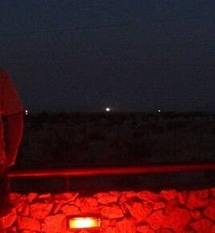

Marfa lights
West Texas

Glowing orbs seen east of Marfa for over a century. Studies attribute many to car headlights and atmospheric effects. 1
Open in the interactive Watcher
Sources
- Marfa lights Wikipedia
West Texas

Glowing orbs seen east of Marfa for over a century. Studies attribute many to car headlights and atmospheric effects. 1
Open in the interactive Watcher